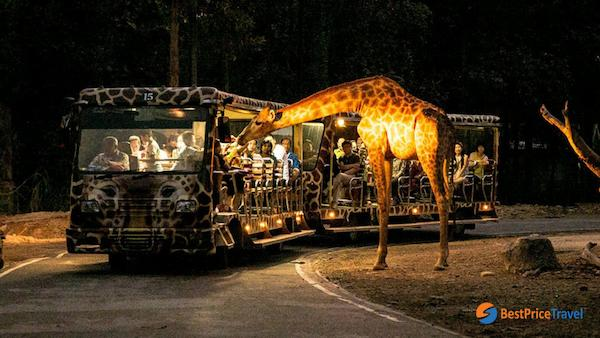
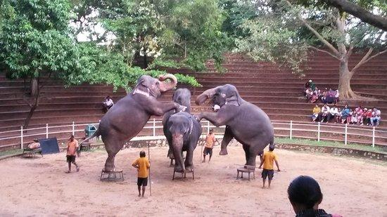
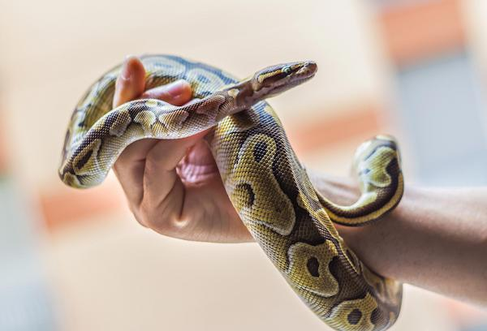

1.DEHIWALA ZOO NIGHT SAFARI
Enough of clubs and pubs to spend a memorable night! Hit Dehiwala Zoo Night Safari which is a freshly started service by the zoo where they take their guests on a safari at night. Here, people can witness animals in their natural habitat enjoying their daily life.
They really enjoy the nocturnal activities of the distinct wildlife species and so making this safari a very demanding activity of the zoo. It is a very adventurous activity where one can bring their families and lovers to spend an enthusiastic night in the woods.
This is a weekly activity which is enjoyed by the locals and foreigners alike. So you have to definitely get your tickets booked beforehand. You could choose a slot from 07:00 PM to 10:00 PM every Friday, Saturday, and Sunday. The experience is worth all the money you spend which is LKR 700 for the adults and LKR 350 for a child for a single ticket.
2.HELLO TO ELEPHANTS
The most popular activity to do at the Dehiwala Zoo in the evening is to watch the Elephant Show. This includes one of the heaviest animals on the earth presenting a group dance in front of you along with a show consisting of various stunts by them. This is the most popular activity of the zoo among the kids of various ages.
Also, it includes the usage of both, the Asian and the African elephants which helps the kids to understand the difference between both of them. So, it is entertaining as well as educational for the kids and the adults alike. You can witness this in the evening at 04:30 PM daily without any special ticket.
1630 hrs
Location :- Elephant arena number 02
3.SNAKES ARE OUR FRIENDS
Exhibiting around 32 endemic and tropical species of the reptiles, this section is for all the reptile lovers. And if you aren’t a reptile lover then you must visit the place and you will become one at the end of this tour. You will witness various unique reptiles like Galapagos Giant Tortoise, crocodiles, snakes, lizards and much more at the section.
The most popular section of the zoo is the snake section which consists of species like Hump Nosed Viper, Sri Lankan Cobra, Pythons and much more. The main attraction of this section is the Dwarf crocodile which is cherished by tourists a lot. Besides these, you can also witness turtles, iguanas, and terrapins living lovingly in their section together.
1430 hrs
Saturday and Sunday
Location :- Elephant arena number 01